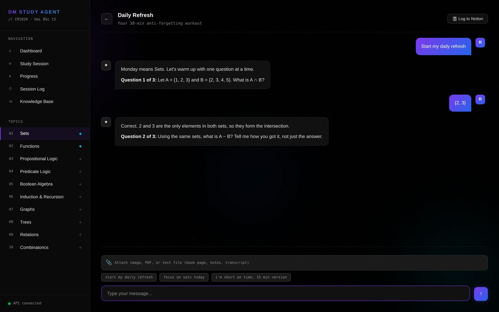

LLM study assistant built on Claude, with Drive and Notion sync
Stack
A browser-only application that streams from a model API, syncs files to the user's own cloud storage, and writes structured records to their own workspace through a proxy that holds the only secret the browser must never see. One HTML file, no build step, no backend of its own.

Project scope
A conversational tutor that keeps a durable record: what was covered, how it went, and what needs review. That means three integrations, each with a different auth model, from a page with no server behind it.
Constraints
It had to run on static hosting alone, so the only thing to host is the page itself. Each person using it brings their own API keys and their own storage, so their work stays in accounts they control.
It had to be shareable. Someone else can run their own copy, with their own keys, without touching the author's storage or workspace. That also means the public repository holds only code: every key, database identifier and personal value lives in runtime settings instead.
It had to work across two machines in daily use, so files and history sync rather than living on whichever laptop was open. And of the three APIs it talks to, one accepts browser origins only through a server, which shaped the one piece of infrastructure the project has.
Approach
- Keep everything client-side that safely can be, and introduce a server only where an API forces it.
- Move every user-specific value out of code and into a settings panel backed by local storage, so the published source is generic.
- Where a proxy is unavoidable, treat it as a security boundary rather than a pass-through.
- Stream responses rather than waiting, because a wall of text arriving at once is a different product.
Implementation
Streaming
The model API is called directly from the browser with stream: true. The
response is a server-sent event stream read chunk by chunk, with the message re-rendered
on every content_block_delta. Conversation history is held in memory and
replayed with each request.
The first version returned everything at once. The fix was not in the interface, it was in the system prompt: one question per turn, wait for the answer, react to what was actually said, three to five lines. That single change turned a document generator into a dialogue, and it is the highest-leverage part of the build.
The proxy, and why it exists
One of the three APIs rejects browser origins entirely, so a proxy is not a design preference, it is the only route. Given a server had to exist, it took on the job the browser cannot do safely: holding the token. That value never reaches the client.
The proxy is locked three ways rather than one:
| Control | What it stops |
|---|---|
| Origin allowlist | Calls from any page other than the deployed app |
| Shared key header | Calls from anyone who guesses the URL |
| Route allowlist, three patterns | A leaked URL being used to read or delete anything else in the workspace |
The route allowlist is the one worth arguing for. Origin and key checks protect the endpoint. The route allowlist limits the blast radius if both are defeated, because the proxy can only ever perform the three operations the app actually needs.
Scoped storage access
Images attach as base64 blocks, so a photographed page of a book can be read and explained rather than retyped. Cloud sync uses the narrowest available scope, which grants access only to files the application itself created rather than the user's whole drive. On first connection it provisions a folder tree and caches the folder identifiers, then routes uploads by filename convention.
Keys in the browser, stated plainly
A model API key used from a browser is visible to whoever controls that browser. That is acceptable here only because each user supplies their own key against their own billing, and the documentation says so directly rather than leaving the reader to work it out.

Result
- Three services integrated from a static page, with a server introduced only where an API left no alternative.
- The public repository contains no secret of any kind. A later refactor moved every remaining personal value into runtime settings.
- The one credential that cannot be exposed lives server-side, behind three independent controls.